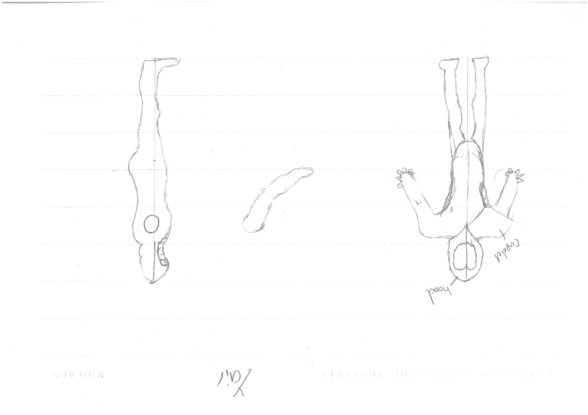

Task 1
Development
This was me making the basic
scaffolding for our project. Because Felix and Victor are quite new to python and pygame especially
creating an environment where it's easier to understand is the least I could do. Here we see me creating
the basic variables like colours, square_size, screen and biard. Also pyt some functions in that did
nothing to show where my group should put their code. Making sure to add plenty of comments to let them
knwo what is going on
